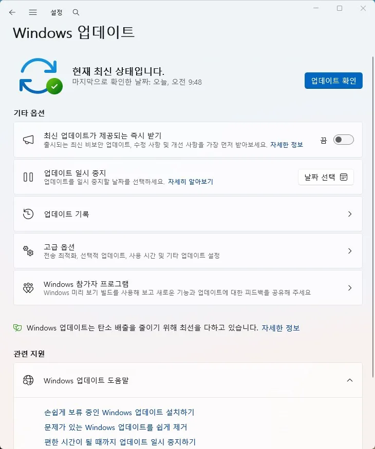
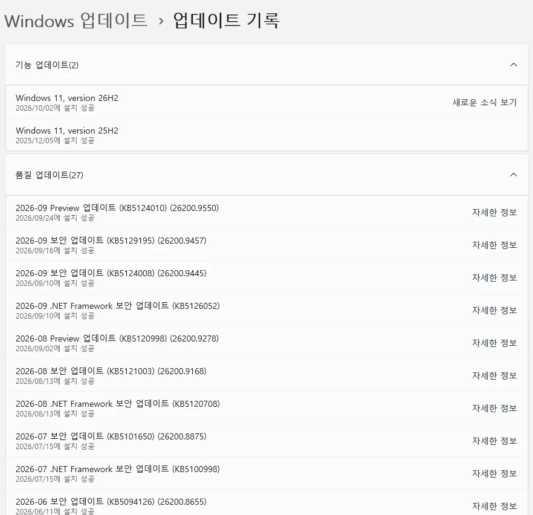

업데이트
업데이트 반복 실패 원인과 점검 순서
윈도우 업데이트가 계속 실패하고 다시 시도하는 경우
업데이트 반복 실패는 다운로드 자체가 안 되는 경우도 있지만, 설치 단계에서만 계속 되돌아가는 경우가 더 흔합니다. 이럴 때는 서버 문제로 넘기기보다 캐시, 권한, 남은 공간부터 보는 편이 빠릅니다.
업데이트 기록에 같은 코드가 반복되면 윈도우 구성요소가 막혀 있을 가능성이 높습니다. 반대로 코드가 바뀌며 실패한다면 디스크 여유나 보안 정책, 서비스 충돌도 같이 봐야 합니다.
이 페이지는 업데이트가 어디서 반복되는지에 따라 점검 순서를 나눠서 설명합니다.
업데이트가 실패할 때마다 Windows는 원인과 무관하게 우선 이전 상태로 롤백부터 시도합니다. 이 롤백 자체는 정상 동작이지만, 재부팅 후 '업데이트 구성 중' 화면이 유독 오래 유지되다가 롤백된다면 시스템 파일이나 구성 요소 저장소 손상 쪽 가능성이 커집니다. 반대로 롤백이 빠르게 끝나고 곧바로 실패 알림이 뜬다면 다운로드나 네트워크 단계에서 걸린 것이라 원인이 다릅니다.
이 가이드가 필요한 상황
- 같은 업데이트를 여러 번 다시 시도한다.
- 재부팅 후에도 바로 실패가 반복된다.
- 디스크 공간이 거의 없거나 임시 파일이 많다.
먼저 확인할 항목
- 업데이트 기록과 코드 확인 — 반복되는 실패는 같은 구성요소가 계속 막히고 있다는 신호입니다. 설치 실패 코드와 반복되는 업데이트 이름을 먼저 적어 두세요. 설정 → Windows 업데이트 화면에서 업데이트 기록을 눌러 실패한 항목과 날짜를 확인할 수 있습니다.

업데이트 기록 화면에서는 기능 업데이트와 품질 업데이트가 구간별로 나뉘어 있고, 항목마다 이름·KB 번호·날짜와 함께 "설치 성공" 또는 "설치 실패"가 표시됩니다. 실패한 항목이 있으면 이름과 KB 번호를 적어 두고 오른쪽 "자세한 정보"로 오류 코드를 확인하세요. 아래는 모두 설치에 성공한 기록의 예시입니다.
- 임시 파일과 캐시 정리 — 업데이트 캐시가 손상되면 같은 파일을 계속 다시 받다가 실패할 수 있습니다. 디스크 정리와 업데이트 캐시 초기화를 순서대로 해보세요.
- 보안 프로그램과 정책 확인 — 업데이트가 보안 프로그램이나 회사 정책에 막히는 경우도 있습니다. 잠시 비활성화하거나 관리 정책이 걸려 있는지 확인합니다.
원인을 더 정확히 나누는 방법
실패 코드보다 패턴이 더 중요할 때
같은 코드가 반복되면 캐시와 서비스 문제일 가능성이 높고, 매번 다른 코드가 나오면 공간 부족이나 전원 끊김, 정책 충돌처럼 바깥 조건을 더 봐야 합니다.
업데이트가 부팅 문제를 남길 때
실패 후 재부팅이 되지 않으면 자동 복구 루프로 이어질 수 있으므로, 단순히 다시 누르기보다 복구 지점을 남겨두고 상태를 확인하는 것이 좋습니다.
디스크 여유 공간과 전원 조건
누적 업데이트는 내려받은 파일과 임시 작업 공간, 롤백용 백업까지 한꺼번에 필요로 해서 C 드라이브 여유가 부족하면 설치 막바지에 실패할 수 있습니다. 노트북이 배터리로만 동작 중이거나 설치 도중 절전·종료가 걸리는 경우에도 같은 식으로 중단되므로 전원 어댑터를 연결하고 여유 공간을 먼저 확보한 뒤 다시 시도하세요.
업데이트와 충돌하는 외부 장치·프로그램
USB 저장장치, 보조 모니터 독, 오래된 보안·최적화 프로그램이 설치 중 드라이버나 시스템 파일에 간섭해 실패를 만드는 경우가 있습니다. 불필요한 USB 장치를 분리하고 서드파티 프로그램을 잠시 꺼둔 상태로 시도했을 때 성공한다면, 그 프로그램이 원인 후보입니다.
같은 업데이트가 계속 실패할 때: 카탈로그에서 수동 설치
설정 → Windows 업데이트 → 업데이트 기록에서 실패하는 업데이트의 KB 번호가 매번 같다면, Microsoft Update 카탈로그(catalog.update.microsoft.com)에서 그 KB 번호를 검색해 내 Windows 버전과 시스템 종류(대부분 x64)에 맞는 .msu 파일을 받아 직접 실행하는 방법이 있습니다. 이 방식은 Windows Update의 다운로드·검색 단계를 건너뛰므로, 실패 원인이 다운로드 구성 요소 쪽이었다면 설치가 통과합니다. 수동 설치에서도 같은 위치에서 실패하면 원인은 다운로드가 아니라 시스템 구성 요소나 디스크 쪽이므로 DISM 복구와 디스크 점검으로 넘어가세요. 어떤 KB를 설치할지 확신이 없을 때는 이 방법을 쓰지 말고, 업데이트 기록의 실패 항목에 표시된 번호만 사용하세요.
확인 결과에 따른 다음 단계
- 같은 코드가 계속 뜰 때 — 업데이트 파일이나 서비스가 꼬였을 가능성이 높아 초기화와 캐시 정리를 먼저 해야 합니다.
- 다른 코드가 번갈아 뜰 때 — 디스크 공간, 전원 안정성, 백신/보안 정책처럼 외부 조건을 함께 확인하세요.
피해야 할 실수
- 실패 코드 없이 재시도만 반복하는 것
- 공간이 부족한데도 큰 파일을 그대로 두는 것
- 실패 때마다 전원 버튼으로 강제 종료해 롤백 과정을 끊는 것
- 오류 코드는 확인하지 않고 업데이트 파일을 출처 불명 사이트에서 따로 받아 설치하는 것
자주 묻는 질문
- 업데이트를 일시 중지했다가 다시 하면 나아지나요? 일시적으로 나아질 수는 있지만, 같은 패턴이 반복되면 캐시나 서비스 문제를 다시 봐야 합니다.
- 업데이트 후 "바이러스 보호가 꺼져 있습니다" 경고가 떠요. 감염된 건가요? 2026년 8월 배포된 Defender 업데이트(4.18.26070.9) 이후 일부 PC에서 Defender가 정상 작동 중인데도 "꺼져 있습니다"라는 잘못된 알림이 뜨는 문제가 있었고, Microsoft는 9월 17일 배포한 Defender 업데이트(4.18.26080.4)로 해결했다고 밝혔습니다. Windows 보안에서 실시간 보호가 실제로 켜져 있는지 확인하고, 알림이 계속되면 보호 업데이트를 확인해 보세요. 타사 백신을 쓰는 PC는 Defender가 꺼져 있는 것이 정상일 수 있습니다.
- 업데이트 후 재부팅이 유난히 잦아요. 왜 그런가요? 2026년 8월 업데이트부터 Secure Boot(보안 부팅) 인증서를 새 버전으로 교체하는 작업이 더 넓은 범위로 배포되고 있습니다. 기존 인증서 만료(2026년 6~10월)에 대비한 정상적인 백그라운드 작업으로, 재부팅 한두 번으로 조용히 끝나는 경우가 대부분입니다. (출처: Microsoft 공식 KB5121003 문서)
- 업데이트 실패 후 PC를 계속 써도 되나요? 롤백이 정상적으로 끝나 이전 상태로 부팅된다면 계속 사용할 수 있습니다. 다만 같은 업데이트가 반복해서 다시 시도되므로, 중요한 자료는 백업해 두고 위 점검 순서대로 원인을 정리하는 것이 좋습니다.
이 증상과 함께 나타나는 오류 코드
- 0x800F081F · 원본 파일을 찾을 수 없음
- 0x80070422 · 필요한 서비스가 비활성화됨
- 0x80070070 · 디스크 공간 부족
- 0xC1900101 · 업데이트 드라이버 호환성 실패
- 0x80240034 · WU_E_DOWNLOAD_FAILED 업데이트 다운로드 실패
- 0x800F0983 · CBS 매니페스트 손상 오류
- 0x8007000D · 업데이트 파일 누락 또는 손상
최종 검토일: 2026-10-15